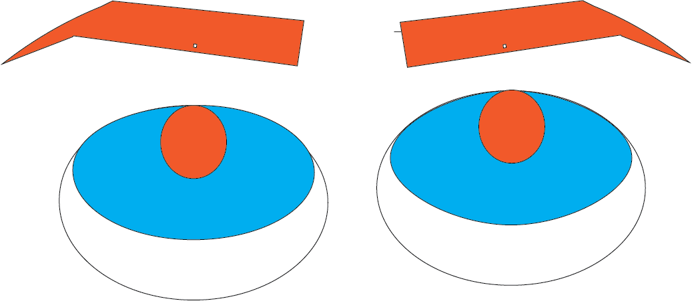

For this assignment, I chose to create an eye that conveyed annoyance. I used orange because it is a warm color that can represent anger (without making the eye look bloodshot with red) and blue to compliment it.